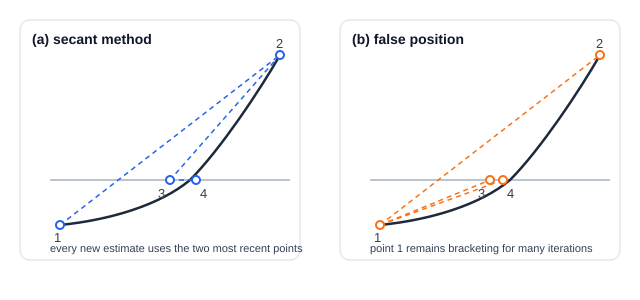

Secant and False Position Methods
| This documentation was generated with the assistance of AI. Please report any inaccuracies. |
For functions that are smooth near a root, assuming the function is locally linear and jumping straight to
where the approximating line crosses zero converges faster than
repeatedly halving the interval. The secant method and the false
position (regula falsi) method are the two classical ways of doing this, differing only in which of the two
previous points is kept for the next iteration. Both are described in
Press et al., 2007, Section 9.2 (pages 449 and 451), and implemented as
SecantSingleRootEstimator and FalsePositionSingleRootEstimator in the com.irurueta.numerical.roots
package.
Linear interpolation between two points
Given two points and their function values, the point where the line through them crosses zero is:
After each iteration, one of the two previous points is discarded in favor of this new estimate. The two methods differ only in which point is kept:
-
Secant always keeps the most recent of the two prior estimates — a natural, but arbitrary, choice on the very first iteration. This does not guarantee the two points continue to bracket the root: the algorithm can, in principle, wander off toward infinity for a sufficiently uncooperative function.
-
False position instead keeps whichever prior point still has a function value of opposite sign from the newest estimate — so the two points always continue to bracket the root, at the cost of sometimes retaining an old, "stale" point for many iterations if the function is not well approximated by a straight line over the whole bracket.

Both panels start from the same two points 1 and 2. The secant method (a) always interpolates through the two most recent estimates, so the working pair slides steadily toward the root. False position (b) instead keeps point 1 fixed for as long as it remains on the opposite side of the root from the newest estimate — every new line is drawn back to that same anchor, which is why its estimates 3 and 4 creep in from one side only.
Convergence trade-off
Because it always uses the two most recent evaluations, the secant method converges faster near a sufficiently continuous root — its order of convergence is the golden ratio itself, . False position, by sometimes retaining an older evaluation, has a lower and less easily characterized order of convergence — often superlinear, but with no clean closed form — in exchange for never losing its bracket on the root. Neither method is Press et al., 2007's top recommendation for either speed or robustness: Ridder’s method or Brent’s method, described next, are almost always better choices — these two are presented mainly as the standard textbook stepping stones toward them.
Library implementation
Both classes extend BracketedSingleRootEstimator, sharing the same automatic bracket search described in
Bisection Method, and add:
-
getTolerance()/setTolerance(double)— the step-size tolerance to converge to; default1e-6.
Up to MAXIT = 30 iterations are attempted for each. After estimate() completes, getRoot() returns the
estimated root.
Unlike Bisection Method, SecantSingleRootEstimator’s bracket only supplies
starting points — the root estimate itself is not constrained to stay within it, so a badly-behaved function
can in principle send it far outside the original bracket. `FalsePositionSingleRootEstimator does not have
this risk, since it always keeps a genuine bracket on the root.
|
Example
final var listener = new SingleDimensionFunctionEvaluatorListener() {
@Override
public double evaluate(final double point) {
return point * point - 4.0;
}
};
final var estimator = new SecantSingleRootEstimator(listener, 0.0, 10.0, 1e-9);
estimator.estimate();
final var root = estimator.getRoot(); // approximately 2.0| Class | Javadoc | Source |
|---|---|---|
|
||
|